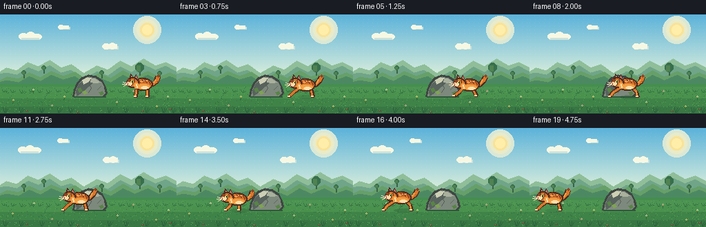
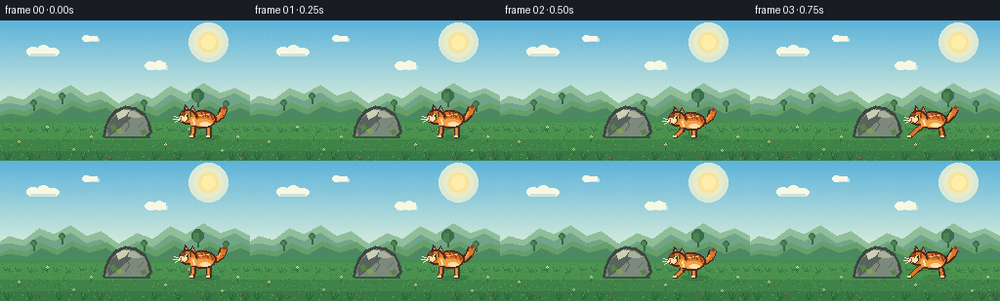

CODING AGENTS AS PIXEL WORLD MODELS
traex/DeepSeek-V4.1-Flash · dynamic_spatial_relationship_0009
点击播放 · 原生 RGB 像素
逐轮保存的候选
回放视频、检查图与代码变化。
每份候选均可单独播放。实际图片检查记录在下方工具轨迹中。
候选 01播放与检查图
点击播放 · 原生 RGB 像素

展开代码变化
--- 上一保存版本
+++ 本次保存版本
@@ -0,0 +1,362 @@
+from pathlib import Path
+
+import numpy as np
+from PIL import Image, ImageDraw
+
+from artifact_io import save
+
+
+W, H = 256, 144
+GROUND_Y = 119
+
+SKY_TOP = (91, 178, 218)
+SKY_BOTTOM = (214, 236, 219)
+CLOUD = (247, 248, 228)
+CLOUD_SHADE = (205, 226, 220)
+FAR_HILL = (112, 165, 137)
+FAR_HILL_LIGHT = (143, 190, 153)
+MID_HILL = (76, 137, 99)
+MID_HILL_LIGHT = (103, 159, 105)
+MEADOW = (69, 142, 79)
+MEADOW_LIGHT = (104, 170, 91)
+MEADOW_DARK = (47, 105, 63)
+EARTH = (112, 89, 60)
+ROCK_OUTLINE = (63, 70, 66)
+ROCK_DARK = (88, 99, 94)
+ROCK_MID = (126, 137, 125)
+ROCK_LIGHT = (169, 177, 157)
+ROCK_HIGHLIGHT = (204, 207, 179)
+MOSS = (88, 132, 70)
+MOSS_LIGHT = (126, 164, 82)
+
+CAT_OUTLINE = (74, 43, 31)
+CAT_ORANGE = (218, 119, 44)
+CAT_LIGHT = (242, 159, 69)
+CAT_PALE = (252, 194, 112)
+CAT_STRIPE = (144, 67, 35)
+CAT_CREAM = (255, 223, 169)
+CAT_PINK = (218, 139, 126)
+CAT_EYE = (190, 216, 91)
+
+
+def mix(a, b, t):
+ return tuple(round(a[i] * (1.0 - t) + b[i] * t) for i in range(3))
+
+
+def draw_sky(img):
+ pixels = np.asarray(img).copy()
+ for y in range(88):
+ t = y / 87
+ color = mix(SKY_TOP, SKY_BOTTOM, t)
+ pixels[y, :, :] = color
+ # A sparse two-tone dither keeps the gradient in the pixel-art idiom.
+ if y % 5 == 2:
+ alternate = mix(color, (255, 255, 246), 0.08)
+ for x in range(y % 2, W, 7):
+ pixels[y, x, :] = alternate
+ img.paste(Image.fromarray(pixels, "RGB"))
+
+
+def draw_sun_and_clouds(draw, frame):
+ # Soft pixel sun near the upper-right, with concentric light bands.
+ for radius, color in ((20, (218, 232, 214)), (15, (233, 235, 201)), (10, (249, 227, 152))):
+ draw.ellipse((213 - radius, 22 - radius, 213 + radius, 22 + radius), fill=color)
+ draw.ellipse((206, 15, 220, 29), fill=(255, 238, 170))
+
+ drift = frame // 7
+ cloud_specs = [
+ (24 - drift, 25, 0.78),
+ (146 + drift, 41, 0.60),
+ (84 - drift, 14, 0.42),
+ ]
+ for cx, cy, scale in cloud_specs:
+ if scale >= 0.70:
+ draw.rectangle((cx + 6, cy + 6, cx + 33, cy + 11), fill=CLOUD_SHADE)
+ draw.rectangle((cx + 8, cy + 3, cx + 31, cy + 10), fill=CLOUD)
+ draw.ellipse((cx + 3, cy + 2, cx + 16, cy + 11), fill=CLOUD)
+ draw.ellipse((cx + 13, cy, cx + 27, cy + 11), fill=CLOUD)
+ draw.ellipse((cx + 23, cy + 3, cx + 36, cy + 11), fill=CLOUD)
+ draw.rectangle((cx + 7, cy + 9, cx + 32, cy + 11), fill=CLOUD_SHADE)
+ elif scale >= 0.55:
+ draw.rectangle((cx + 5, cy + 5, cx + 25, cy + 9), fill=CLOUD_SHADE)
+ draw.rectangle((cx + 7, cy + 2, cx + 23, cy + 8), fill=CLOUD)
+ draw.ellipse((cx + 2, cy + 1, cx + 13, cy + 9), fill=CLOUD)
+ draw.ellipse((cx + 11, cy, cx + 22, cy + 9), fill=CLOUD)
+ else:
+ draw.rectangle((cx + 2, cy + 4, cx + 17, cy + 7), fill=CLOUD_SHADE)
+ draw.rectangle((cx + 4, cy + 2, cx + 15, cy + 6), fill=CLOUD)
+ draw.ellipse((cx, cy + 1, cx + 8, cy + 7), fill=CLOUD)
+
+
+def draw_hills(draw):
+ far = [
+ (-8, 91), (8, 79), (23, 83), (39, 70), (54, 76), (71, 67),
+ (87, 78), (102, 73), (120, 86), (139, 75), (155, 81), (173, 68),
+ (189, 76), (207, 65), (224, 75), (239, 70), (264, 82), (264, 101), (-8, 101),
+ ]
+ draw.polygon(far, fill=FAR_HILL)
+ draw.polygon(
+ [(-8, 87), (9, 77), (24, 81), (40, 69), (55, 75), (72, 66),
+ (88, 77), (103, 72), (121, 85), (140, 74), (156, 80), (174, 67),
+ (190, 75), (208, 64), (225, 74), (240, 69), (264, 81), (264, 87),
+ (240, 74), (225, 80), (208, 72), (190, 83), (174, 75), (156, 88),
+ (140, 82), (121, 93), (103, 80), (88, 84), (72, 73), (55, 82),
+ (40, 76), (24, 87), (9, 84)],
+ fill=FAR_HILL_LIGHT,
+ )
+
+ mid = [
+ (-8, 102), (9, 92), (25, 95), (41, 86), (57, 93), (73, 84),
+ (90, 91), (107, 85), (124, 96), (142, 87), (159, 94), (177, 83),
+ (194, 92), (213, 84), (229, 92), (245, 86), (264, 94), (264, 118), (-8, 118),
+ ]
+ draw.polygon(mid, fill=MID_HILL)
+ draw.polygon(
+ [(-8, 99), (10, 90), (26, 93), (42, 84), (58, 91), (74, 82),
+ (91, 89), (108, 83), (125, 94), (143, 85), (160, 92), (178, 81),
+ (195, 90), (214, 82), (230, 90), (246, 84), (264, 92), (264, 97),
+ (246, 89), (230, 95), (214, 87), (195, 95), (178, 87), (160, 98),
+ (143, 91), (125, 100), (108, 89), (91, 94), (74, 87), (58, 96),
+ (42, 89), (26, 98), (10, 95)],
+ fill=MID_HILL_LIGHT,
+ )
+
+ # Tiny distant trees break up the long hill silhouettes.
+ for x, y, scale in ((34, 88, 1), (63, 81, 1), (147, 88, 1), (202, 84, 2), (231, 89, 1)):
+ draw.rectangle((x, y - 3 * scale, x + 1, y + 4), fill=(56, 99, 70))
+ draw.ellipse((x - 3 * scale, y - 7 * scale, x + 3 * scale, y - 1), fill=(56, 111, 76))
+ draw.rectangle((x - 2 * scale, y - 5 * scale, x + 1, y - 2), fill=(80, 130, 82))
+
+
+def draw_meadow(img, draw):
+ # Fine horizontal bands give the field depth without competing with the action.
+ draw.rectangle((0, 101, W, H), fill=MEADOW)
+ draw.rectangle((0, 105, W, 112), fill=(77, 148, 82))
+ draw.rectangle((0, 113, W, 121), fill=(74, 145, 78))
+ draw.rectangle((0, 122, W, H), fill=(64, 131, 72))
+ draw.rectangle((0, 134, W, H), fill=(57, 119, 68))
+
+ rng = np.random.default_rng(41)
+ pixels = np.asarray(img).copy()
+ for _ in range(520):
+ x = int(rng.integers(0, W))
+ y = int(rng.integers(105, H))
+ if y < 112:
+ color = (94, 163, 87) if rng.random() < 0.55 else (58, 122, 71)
+ else:
+ color = (91, 160, 84) if rng.random() < 0.55 else (48, 109, 64)
+ pixels[y, x, :] = color
+ img.paste(Image.fromarray(pixels, "RGB"))
+
+
+def draw_grass_tuft(draw, x, y, height=5, sway=0, color=MEADOW_DARK):
+ draw.line((x, y, x - 2 + sway, y - height), fill=color, width=1)
+ draw.line((x + 1, y, x + 2 + sway, y - height + 1), fill=color, width=1)
+ draw.line((x + 2, y, x + 5 + sway, y - height + 2), fill=color, width=1)
+
+
+def draw_flowers(draw, frame):
+ flower_positions = [
+ (18, 129, (246, 224, 144)), (48, 114, (246, 232, 204)),
+ (75, 137, (242, 176, 178)), (92, 124, (247, 228, 148)),
+ (169, 132, (244, 229, 194)), (193, 116, (238, 176, 179)),
+ (226, 138, (247, 223, 133)), (243, 124, (244, 237, 208)),
+ ]
+ for i, (x, y, color) in enumerate(flower_positions):
+ sway = 1 if (frame // 5 + i) % 3 == 0 else 0
+ draw.line((x, y, x + sway, y - 4), fill=(46, 104, 60), width=1)
+ draw.point((x - 1 + sway, y - 5), fill=color)
+ draw.point((x + 1 + sway, y - 5), fill=color)
+ draw.point((x + sway, y - 6), fill=color)
+ draw.point((x + sway, y - 4), fill=(229, 183, 68))
+
+
+def draw_rock(draw):
+ # The boulder is a stable landmark with a clear right edge at x=153.
+ outer = [(105, 119), (107, 109), (111, 99), (118, 91), (128, 87),
+ (139, 89), (148, 95), (153, 105), (155, 114), (151, 120)]
+ draw.polygon(outer, fill=ROCK_OUTLINE)
+ face = [(108, 118), (110, 108), (114, 100), (120, 94), (129, 90),
+ (138, 92), (146, 98), (150, 106), (152, 114), (148, 118)]
+ draw.polygon(face, fill=ROCK_MID)
+
+ draw.polygon(
+ [(110, 111), (114, 101), (121, 95), (129, 91), (137, 93),
+ (132, 101), (124, 108), (116, 115), (111, 118)],
+ fill=ROCK_DARK,
+ )
+ draw.polygon(
+ [(128, 91), (137, 93), (145, 98), (149, 105), (145, 105),
+ (138, 100), (131, 98)],
+ fill=ROCK_LIGHT,
+ )
+ draw.polygon(
+ [(119, 95), (126, 91), (132, 92), (127, 98), (121, 101)],
+ fill=ROCK_HIGHLIGHT,
+ )
+ draw.polygon(
+ [(138, 100), (147, 98), (150, 105), (148, 114), (143, 111)],
+ fill=ROCK_MID,
+ )
+
+ # Cracks and lichen anchor the rock in the meadow.
+ draw.line((131, 94, 129, 101, 132, 107), fill=(83, 91, 83), width=1)
+ draw.line((132, 107, 128, 113), fill=(83, 91, 83), width=1)
+ draw.line((146, 104, 141, 109), fill=(95, 103, 92), width=1)
+ draw.polygon([(112, 108), (116, 106), (119, 110), (115, 113)], fill=MOSS)
+ draw.polygon([(119, 112), (123, 110), (126, 114), (122, 116)], fill=MOSS_LIGHT)
+ draw.polygon([(143, 113), (148, 111), (150, 115), (146, 117)], fill=MOSS)
+ draw.line((107, 119, 153, 119), fill=(47, 89, 58), width=2)
+
+
+def draw_cat_shadow(overlay_draw, x, y, airborne):
+ alpha = 44 if airborne else 65
+ width = 25 if airborne else 29
+ overlay_draw.ellipse(
+ (x + 14, GROUND_Y - 2, x + 14 + width, GROUND_Y + 3),
+ fill=(28, 70, 43, alpha),
+ )
+
+
+def leg(draw, start, end, bend, phase):
+ sx, sy = start
+ ex, ey = end
+ mx = (sx + ex) // 2 + bend
+ my = (sy + ey) // 2
+ points = [(sx, sy), (mx, my), (ex, ey)]
+ draw.line(points, fill=CAT_OUTLINE, width=6, joint="curve")
+ draw.line(points, fill=CAT_ORANGE, width=3, joint="curve")
+ if phase in (0, 2):
+ draw.line((mx, my, ex, ey), fill=CAT_LIGHT, width=1)
+ draw.rectangle((ex - 2, ey - 1, ex + 2, ey + 1), fill=CAT_OUTLINE)
+ draw.rectangle((ex - 2, ey - 1, ex + 1, ey), fill=CAT_CREAM)
+
+
+def draw_cat(img, x, y, phase, running, frame):
+ overlay = Image.new("RGBA", img.size, (0, 0, 0, 0))
+ od = ImageDraw.Draw(overlay)
+ airborne = running and phase in (1, 3)
+ draw_cat_shadow(od, x, y, airborne)
+ img.alpha_composite(overlay) if img.mode == "RGBA" else img.paste(
+ Image.alpha_composite(img.convert("RGBA"), overlay).convert("RGB")
+ )
+ draw = ImageDraw.Draw(img)
+
+ # Tail: an outlined, banded curve that counterbalances the leftward run.
+ tail_rise = 1 if phase in (1, 3) else 0
+ tail_wag = 1 if (frame // 3) % 2 else 0
+ tail = [
+ (x + 34, y + 13),
+ (x + 40, y + 12),
+ (x + 45, y + 8 - tail_rise),
+ (x + 47 + tail_wag, y + 2 - tail_rise),
+ ]
+ draw.line(tail, fill=CAT_OUTLINE, width=8, joint="curve")
+ draw.line(tail, fill=CAT_ORANGE, width=5, joint="curve")
+ draw.line([(x + 41, y + 10), (x + 44, y + 6 - tail_rise)], fill=CAT_LIGHT, width=2)
+ draw.line((x + 46 + tail_wag, y + 2 - tail_rise, x + 48 + tail_wag, y - tail_rise),
+ fill=CAT_STRIPE, width=5)
+
+ # Hind and front legs are separated by phase to read as a run cycle.
+ if running:
+ front_ends = [(-1, GROUND_Y), (2, GROUND_Y - 1), (8, GROUND_Y), (1, GROUND_Y)]
+ rear_ends = [(39, GROUND_Y), (34, GROUND_Y - 1), (27, GROUND_Y), (35, GROUND_Y)]
+ bends = [-2, 1, 2, 0]
+ leg(draw, (x + 16, y + 17), (x + front_ends[phase][0], front_ends[phase][1]),
+ bends[phase], phase)
+ leg(draw, (x + 31, y + 16), (x + rear_ends[phase][0], rear_ends[phase][1]),
+ -bends[phase], phase)
+ else:
+ leg(draw, (x + 16, y + 17), (x + 14, GROUND_Y), 0, 0)
+ leg(draw, (x + 31, y + 16), (x + 31, GROUND_Y), 0, 0)
+
+ # Body silhouette.
+ draw.ellipse((x + 10, y + 4, x + 39, y + 22), fill=CAT_OUTLINE)
+ draw.ellipse((x + 12, y + 6, x + 37, y + 20), fill=CAT_ORANGE)
+ draw.ellipse((x + 16, y + 13, x + 35, y + 20), fill=CAT_LIGHT)
+ draw.ellipse((x + 22, y + 16, x + 33, y + 20), fill=CAT_CREAM)
+
+ # Tabby markings.
+ for sx, sy in ((x + 18, y + 6), (x + 23, y + 5), (x + 28, y + 6), (x + 33, y + 8)):
+ draw.line((sx, sy, sx + 2, sy + 5), fill=CAT_STRIPE, width=2)
+ draw.line((x + 21, y + 9, x + 31, y + 8), fill=CAT_PALE, width=1)
+ draw.line((x + 27, y + 6, x + 28, y + 10), fill=CAT_STRIPE, width=1)
+
+ # Ears behind the head.
+ draw.polygon([(x + 5, y + 6), (x + 7, y - 2), (x + 12, y + 4)], fill=CAT_OUTLINE)
+ draw.polygon([(x + 7, y + 5), (x + 8, y + 1), (x + 10, y + 4)], fill=CAT_PINK)
+ draw.polygon([(x + 12, y + 4), (x + 15, y - 1), (x + 18, y + 6)], fill=CAT_OUTLINE)
+ draw.polygon([(x + 14, y + 4), (x + 15, y + 1), (x + 17, y + 5)], fill=CAT_PINK)
+
+ # Head and muzzle, angled slightly toward the direction of travel.
+ draw.ellipse((x + 1, y + 3, x + 19, y + 18), fill=CAT_OUTLINE)
+ draw.ellipse((x + 3, y + 5, x + 17, y + 16), fill=CAT_ORANGE)
+ draw.ellipse((x, y + 8, x + 10, y + 16), fill=CAT_OUTLINE)
+ draw.ellipse((x + 1, y + 9, x + 9, y + 15), fill=CAT_CREAM)
+ draw.polygon([(x + 3, y + 5), (x + 7, y + 6), (x + 6, y + 10), (x + 3, y + 9)],
+ fill=CAT_STRIPE)
+ draw.line((x + 12, y + 6, x + 12, y + 10), fill=CAT_STRIPE, width=2)
+
+ # Eye, nose and whiskers.
+ draw.rectangle((x + 8, y + 8, x + 11, y + 10), fill=CAT_EYE)
+ draw.rectangle((x + 9, y + 8, x + 10, y + 10), fill=(45, 53, 29))
+ draw.rectangle((x + 9, y + 8, x + 9, y + 8), fill=(242, 247, 174))
+ draw.rectangle((x + 1, y + 11, x + 3, y + 13), fill=(183, 80, 73))
+ draw.point((x + 2, y + 11), fill=(255, 169, 154))
+ draw.line((x + 2, y + 14, x + 5, y + 15), fill=(126, 75, 55), width=1)
+ draw.line((x + 2, y + 12, x - 4, y + 10), fill=(249, 226, 185), width=1)
+ draw.line((x + 2, y + 13, x - 5, y + 13), fill=(249, 226, 185), width=1)
+ draw.line((x + 2, y + 13, x - 3, y + 16), fill=(249, 226, 185), width=1)
+
+ # A crisp chest highlight separates the head from the body.
+ draw.ellipse((x + 12, y + 11, x + 19, y + 19), fill=CAT_LIGHT)
+ draw.line((x + 15, y + 13, x + 16, y + 18), fill=CAT_CREAM, width=2)
+
+
+def draw_foreground(draw, frame):
+ # Sparse foreground grass and small pebbles add depth at the frame edges.
+ for i, x in enumerate((6, 29, 59, 84, 101, 157, 181, 211, 236, 250)):
+ sway = 1 if (frame // 4 + i) % 2 else 0
+ draw_grass_tuft(draw, x, 142, height=7, sway=sway, color=(42, 96, 58))
+ for x, y in ((37, 139), (111, 141), (205, 140), (245, 137)):
+ draw.ellipse((x, y, x + 3, y + 1), fill=(91, 82, 57))
+ draw.point((x + 1, y), fill=(148, 131, 86))
+
+
+def render_frame(index):
+ img = Image.new("RGB", (W, H), SKY_TOP)
+ draw = ImageDraw.Draw(img)
+ draw_sky(img)
+ draw_sun_and_clouds(draw, index)
+ draw_hills(draw)
+ draw_meadow(img, draw)
+
+ # Ground cover behind the action.
+ for i, x in enumerate(range(4, W, 13)):
+ sway = 1 if (index // 5 + i) % 3 == 0 else 0
+ draw_grass_tuft(draw, x, 112 + (i % 3), height=3 + (i % 3), sway=sway,
+ color=(53, 116, 66))
+ draw_flowers(draw, index)
+ draw_rock(draw)
+
+ x_positions = [182, 180, 171, 162, 153, 144, 135, 126, 117, 108,
+ 99, 90, 81, 72, 63, 54, 45, 36, 27, 9]
+ running = index >= 2
+ phase = index % 4
+ bob = (0, 1, 2, 1)[phase] if running else 0
+ cat_y = 88 + bob
+ draw_cat(img, x_positions[index], cat_y, phase, running, index)
+
+ draw_foreground(draw, index)
+ return img
+
+
+def main():
+ case_dir = Path(__file__).resolve().parent
+ frames = np.stack([np.asarray(render_frame(i), dtype=np.uint8) for i in range(20)])
+ save(frames, case_dir)
+ print(f"Saved {len(frames)} frames to {case_dir}")
+
+
+if __name__ == "__main__":
+ main()
候选 02播放与检查图
点击播放 · 原生 RGB 像素

展开代码变化
--- 上一保存版本
+++ 本次保存版本
@@ -54,7 +54,7 @@
alternate = mix(color, (255, 255, 246), 0.08)
for x in range(y % 2, W, 7):
pixels[y, x, :] = alternate
- img.paste(Image.fromarray(pixels, "RGB"))
+ img.paste(Image.fromarray(pixels))
def draw_sun_and_clouds(draw, frame):
@@ -146,7 +146,7 @@
else:
color = (91, 160, 84) if rng.random() < 0.55 else (48, 109, 64)
pixels[y, x, :] = color
- img.paste(Image.fromarray(pixels, "RGB"))
+ img.paste(Image.fromarray(pixels))
def draw_grass_tuft(draw, x, y, height=5, sway=0, color=MEADOW_DARK):
可观测工具轨迹
实际执行的命令与返回图片。
命令 1exit 0
/bin/bash -c "pwd && rg --files -g 'prompt.txt' -g 'GENERATION_RULES.md' -g 'task_spec.json' -g '"'!**/.git/**'"'"
命令 2exit 0
/bin/bash -c 'ls -la'
命令 3exit 0
/bin/bash -c 'cat prompt.txt'
命令 4exit 0
/bin/bash -c 'cat GENERATION_RULES.md'
命令 5exit 0
/bin/bash -c 'cat task_spec.json'
命令 6exit 0
/bin/bash -c "sed -n '1,240p' artifact_io.py && sed -n '1,220p' player_template.html"
命令 7exit 0
/bin/bash -c "python - <<'PY'
import numpy, PIL
print('numpy', numpy.__version__)
print('Pillow', PIL.__version__)
PY"命令 8exit 0
/bin/bash -c 'python generate.py'
命令 9exit 0
/bin/bash -c "python - <<'PY'
from pathlib import Path
import numpy as np
from PIL import Image
p=Path('.')
frames=sorted((p/'frames').glob('*.png'))
print('frame_count', len(frames))
for f in (frames[0], frames[-1]):
im=Image.open(f)
print(f.name, im.mode, im.size)
z=np.load('pixels.npz')['pixels']
print('pixels', z.shape, z.dtype, int(z.min()), int(z.max()))
print('index_bytes', (p/'index.html').stat().st_size)
print('npz_bytes', (p/'pixels.npz').stat().st_size)
PY"命令 10exit 0
/bin/bash -c "python generate.py && python -m py_compile generate.py && python - <<'PY'
from pathlib import Path
from PIL import Image
frames=sorted(Path('frames').glob('*.png'))
assert len(frames)==20
assert all(Image.open(f).mode=='RGB' and Image.open(f).size==(256,144) for f in frames)
for name in ('pixels.npz','inspection.png','transition_check.png','index.html','generate.py'):
assert Path(name).is_file(), name
print('verified: 20 RGB frames at 256x144, 4 fps contract artifacts present')
PY"视觉工具实际返回图片 1

视觉工具实际返回图片 2

保存候选 2 份；完成命令 10 次；可验证图片返回 2 张。原始 API 响应与完整日志保留在本地。